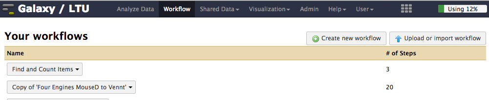

Identifying proteins from mass spec data¶
Anticipated workshop duration when delivered to a group of participants is 4 hours.
For queries relating to this workshop, contact Melbourne Bioinformatics (bioinformatics-training@unimelb.edu.au).
Overview¶
Topic¶
- Genomics
- Transcriptomics
- Proteomics
- Metabolomics
- Statistics and visualisation
- Structural Modelling
- Basic skills
Skill level¶
- Beginner
- Intermediate
- Advanced
Description¶
Data: The data used in this tutorial were obtained from a single run on an Orbitrap Elite mass spectrometer. The sample itself corresponds to a purified organelle from Mouse cells.
Tools: Various tools on Galaxy.
Pipeline:
Section 1: Data
Section 2: Run a Search
Section 3: Protein Inference
Learning Objectives¶
At the end of this introductory workshop, you will:
- Identify a list of proteins from tandem mass spectrometry data.
- Use this list to guess the identity of the “mystery” organelle.
Tutorial layout¶
- There is a
Table of contentson the right-hand side which can be used to easily navigate through the tutorial by clicking the relevant section.
These grey coloured boxes are code blocks. The rectangular boxes in the top
right hand corner of this code block/grey box can be used to copy the code to
the clipboard.
Coloured boxes like these with > on the far right hand side, can be clicked to reveal the contents.
REVEALED!
Attention: Pay attention to the information in these boxes.
Important information, hints and tips.
Requirements and preparation¶
Important
Attendees are required to use their own laptop computers.
At least one week before the workshop, if required, participants should install the software below. This should provide sufficient time for participants to liaise with their own IT support should they encounter any IT problems.
Mode of Delivery¶
This workshop will be run on Galaxy. Use a supported browser such as Firefox, Safari or Chrome.
-
Open a browser and go to a Galaxy server.
- You can use a galaxy server of your own or
- Galaxy Australia
-
Register as a new user if you dont already have an account on that particular server.
Required Software¶
No additional data is needed.
If you use your own galaxy server you will need to make sure you have the protk proteomics tools installed.
Required Data¶
- https://swift.rc.nectar.org.au:8888/v1/AUTH_ffb00634530a4c37a0b8b08c48068adf/proteomics_tutorial/OrganelleSample.mzML
- https://swift.rc.nectar.org.au:8888/v1/AUTH_ffb00634530a4c37a0b8b08c48068adf/proteomics_tutorial/OrganelleSample.mgf
- https://swift.rc.nectar.org.au:8888/v1/AUTH_ffb00634530a4c37a0b8b08c48068adf/proteomics_tutorial/UniprotMouseD_20140716.fasta
Slides and workshop instructions¶
Author Information¶
Written by: Ira Cooke
James Cook University
Created: Oct 2015
Reviewed:
Background¶
Analyses of this type are a fundamental part of most proteomics studies. The basic idea is to match tandem ms spectra obtained from a sample with equivalent theoretical spectra from a reference protein database. The process is referred to as “protein database search” or even “protein sequencing”, although amino acid sequences are not obtained de novo with this method.
The data used in this tutorial were obtained from a single run on an Orbitrap Elite mass spectrometer. The sample itself corresponds to a purified organelle from Mouse cells.
The aim of the tutorial will be to create a list of all proteins that can be confidently said to be present in the sample, and then to use this list to guess the identity of the “mystery” organelle.
This tutorial uses free software including:
- The X!Tandem search engine
- The Trans Proteomic Pipeline (TPP) for post-search validation
- The Protk tool suite for various conversion tasks and to make working with X!Tandem and the TPP easier
- The Galaxy platform to bring all these tools together
Section 1: Data¶
Login to Galaxy¶
Make sure you are using a supported browser and are logged in to Galaxy.
Import mass spec data¶
-
Create a new history in Galaxy and name it “Organelle Tutorial”.
-
Download datasets using the Galaxy uploader tool.
Open this tool by clicking the button as shown below
After opening the tool select Paste/Fetch data and paste the following URL into the box that appears. Then click Start to initiate the download.
After the download is finished you should have a single item in your history.
-
Rename the history item by clicking the pencil icon beside it to “Edit attributes”.
-
This should bring up a dialog box where you can edit the name.
-
Change the name by removing everything up to the last forward slash “/”
-
Your item should then be named OrganelleSample.mzML
-
Don’t forget to click “Save”.
-
Basic properties of the data¶
Format:
Mass spectrometry data comes in many different formats and the first step in a proteomics analysis often involves data conversion or pre-processing. You can read more about mass spectrometry data formats by clicking the Data Formats and pre-processing bar below.
Data Formats and pre-processing
Mass Spectrometry data analysis is plagued by an overabundance of file formats. The good news is that the Mass Spec community, including many instrument vendors have developed a standard file format for raw data, mzML. The bad news is that many of the old formats are still in widespread use, and most instruments don’t produce it natively. The reference implementation of the mzML standard is a software suite called ProteoWizard. ProteoWizard includes a very handy tool called msconvert that is capable of converting raw data from most instruments into mzML or into one of many other formats. In addition to format conversion, msconvert can also perform a wide variety of noise filtering and peak-picking functions to prepare data for analysis. A typical pre-processing involves;
- Conversion from instrument .raw to mzML
- Peak picking on both MS1 and MS2 data using vendor-native peak picking routines (built in to msconvert)
- Denoising of MS2 data either by thresholding or by keeping only the largest peaks withing a moving window
- Convert spectrum identifiers into a standardized format
To convert files from raw instrument native formats to mzML a windows PC is required. If you need to do this, be sure to download ProteoWizard with vendor reader support. This package comes with MSConvertGUI which allows conversion of raw files using a graphical interface. Once files are in mzML or mgf format they can be converted to various other formats using the msconvert3 tool in Galaxy.
1) What format is the OrganelleSample.mzML file?
Hint
Try clicking the title bar on the data in your galaxy history. This will toggle display of some additional information about the data.
Answer
mzML
MS versus MS/MS:
A key feature of Tandem mass spectrometry is the acquisition of mass spectra (spectra) that measure the masses of precursor ions (whole peptides) as well as spectra that measure the fragment masses of a single selected peptide. These two types of measurements are called MS and MS/MS spectra respectively. The following schematic shows how an MS/MS scan results from the fragmentation of a selected product ion. Often multiple MS/MS spectra are obtained for each MS scan, selecting different precursor masses each time so that as many peptides as possible can be analyzed.
Number of spectra:
Click the eye icon on the history item to view the mzML file as text. The file is almost impossible to read by hand but with some text searching we will be able to deduce the number of MS and MS/MS spectra in the file.
Now try searching for the text “MS1 spectrum” in the page using your web browser’s search function. Looking closely you should see that this text appears once for every MS1 spectrum in the file (plus it occurs one extra time at the top of the file as part of the file description). The file is large though and the browser can only see the first megabyte of it.
Now search for the text “spectrumList count”. It should bring you to a line in the file that says spectrumList count=”24941”. There are a total of 24941 spectra in the entire file including both MS and MS/MS spectra.
2) How many MS spectra are there in this dataset?
Hint
To answer this question you will need to use the Select tool from the Filter and Sort submenu to select lines matching the text “MS1 spectrum” in the whole file. Then use the Line/Word/Character count tool from the Text Manipulation submenu to count the number of lines returned by running the Select tool.
The text “MS1 spectrum” also appears at the top of the file as part of its description so you will need to subtract 1 from your answer
Answer
3142
Attention
In the previous exercise we used two galaxy tools in succession to find out the number of items in a file that matched some text. Future exercises use the same technique so you might find it useful to create a tiny workflow to automate this procedure. See the instructions below.
Create a mini workflow
- Click the Workflow menu item at the top of galaxy
-
Click the button called Create New Workflow

-
Enter a name and description for the new workflow and click Create
-
You should now have a blank workflow canvas. Create an input box for the workflow by scrolling to the bottom left of the galaxy tool menu. Under Workflow Control and then under Inputs you should see an Input dataset item. Click it to create a blank input box

-
Now add workflow nodes for other tools by clicking on the relevant tool in the galaxy tool menu (left pane of galaxy). The tools to add are;
- The Select tool from the Find and Sort submenu
- The Line/Word/Character count tool from the Text Manipulation submenu
-
After adding these tools you can join them up by dragging from the outputs of one node to the inputs of the next
-
Save your workflow

-
After saving the workflow return to the main Workflow menu (top of Galaxy) and select your new workflow to run it. Before running the workflow you will be presented with a window that allows you to alter the workflow inputs.

Prior to the development of tandem mass spectrometry, peptides and proteins were detected purely by matching MS peaks against the masses of whole peptides via Peptide Mass Fingerprinting. This has largely been superceded by tandem mass spectrometry which gains much greater specificity by using the MS/MS spectra. In this tutorial only the MS/MS spectra will be used.
3) How many MS/MS spectra are there in this dataset?
Hint
Use the fact that the file contains a total of 24941 spectra with your answer to the previous question about MS spectra.
Answer
21799
Alternate data formats¶
Another format you are likely to encounter for tandem mass spectrometry data is Mascot Generic Format or mgf. Mascot Generic Format (mgf) is the data file format preferred by the Mascot search engine. It is a text based format is much easier to read by hand than the mzML file. Each spectrum appears between “BEGIN IONS” and “END IONS” statements and simply consists of (mz,intensity) pairs. Additional summary information about the precursor (whole peptide) ion such as its mass, retention time and charge are included.
-
Download the Organelle Sample data in mgf format
Use the Paste/Fetch data tool again and paste the following URL into the box that appears. Then click Start to initiate the download.
-
Inspect the data manually by viewing it in Galaxy. Try to get a feel for the way data is organised within the file.
4) How many spectra are there in this dataset and what type of spectra do you think they are?
Hint
Use the same technique you used for the previous exercise (or your workflow). Remember that for every spectrum there is one “BEGIN IONS” statement in the file.
Consider your answers to questions 3 and 4
Answer
21799 MS/MS
Section 2: Run a Search¶
Obtain a Search Database¶
Setting up a search database is a critical step. For this tutorial we have created a database for you, but if you need to create a database for your own data you’ll need to consider the following key issues;
- Database size
- Whether to include decoys
- What types of variants to include if any
- How to format your database identifiers
More details are provided by clicking on the “Protein Databases” below.
Protein Databases
In a perfect experiment we would obtain fragment ions for all the b,y pairs of each peptide. If peaks can be unambiguously identified for all these pairs then the sequence of a peptide can simply be read off from the fragmentation spectrum itself. Unfortunately this is almost never the case using current instrumentation, and the only practical method to determine the sequences of peptides and proteins present in a sample is to compare spectra with a database of potential proteins. This database is usually just a FASTA formatted file containing amino acid sequences for all known proteins from your study organism. Constructing this database is a crucial first step in any proteomics analysis because only peptide sequences present in the database will appear in the results. In order to detect a peptide, its exact sequence must be explicitly included in the database.
Large vs Small Database
Since it is impossible to detect a peptide unless it is present in the search database, one might consider using a very large database such as the full content of NCBInr. There are two problems with this. The most important is that the sensivity of a search goes down as the search space goes up, which means that searches on large databases often return far fewer hits. Another, more practical issue is that searching a large database often takes an extremely long time, and might even crash your search engine.
Note that very small databases can also cause problems. In particular, some search engines, and most search engine post-processing statistical tools attempt to model the shape of peptide-sequence-match (PSM) score distributions. With a very small database (or with very few spectra) it may not be possible to model these distributions accurately. In most practical situations this is not an issue.
Typical sources of data for search databases
-
Uniprot.org: This is the canonical resource for publicly available protein sequences. It includes two large databases
SwissProt, which contains manually curated sequences andTremblwhich contains sequences automatically generated from genomic and transcriptomic data. -
An Organism Specific database: In some cases, a community of researchers working on specific organisms will create their own sequence data repositories. Some of these are well maintained and are the best source of data for that study organism. Examples include
PlasmoDBfor Malaria forFlybasefor drosophila. -
Transcriptome derived sequences: If you are working on an organism for which public sequence data are scarce, it may be worth obtaining transcriptomic sequences for it. If sufficient data are obtained, the resulting assembled transcript sequences can be translated to form a good quality proteomic database.
-
Other: Depending on the project you might want to include sequences for specific variants of interest, or a six-frame translation of a genome.
Should I include decoys?
Decoys are often useful, but not always needed. Often, the decision to include decoys depends on the requirements of software that is used downstream of the search. Examples on this wiki that make use of Peptide Prophet typically use decoys because it can use these to ‘pin down’ the negative distribution.
-
Download a database of Mouse proteins in fasta format
Use the Paste/Fetch data tool again and paste the following URL into the box that appears. Then click Start to initiate the download.
-
Inspect the first few items in the database in Galaxy. The file is in Fasta format which means that each entry has a single description line that starts with a “>” followed by a unique identifier and then some general descriptive information. The actual sequence of amino acids is given after the description line. Take note of the format of the database identifiers. They are in Uniprot format and look like this;
sp|Q9CQV8|1433B_MOUSE
The database also includes decoy sequences, appended at the end. They have identifiers like this:decoy_rp75404
5) What is the ratio of decoys to non-decoys in the database?
Hint
Decoys are easiest to search for because they all start with “decoy_”. The total number of database entries can be found simply expanding the fasta file in your history (by clicking on its title).
Answer
1:1
Run a search using X!Tandem¶
A large number of search engines now exist for proteomics data. This exercise uses X!Tandem which is one of the fastest and most widely used. Other search engines include OMSSA, MS-GF+ and Mascot.
- Select the X!Tandem Search tool
- Enter parameters as shown in the table below (leave all others at their defaults)
- Click Execute
| Parameter Name | Value |
|---|---|
| Uploaded Fasta File | UniprotMouseD_20140716.fasta |
| MSMS File | OrganelleSample.mgf |
| Variable Modifications | Oxidation M |
| Fixed Modifications | Carbamidomethyl C |
| Missed Cleavages Allowed | 2 |
| Enzyme | Trypsin |
| Fragment Ion Tolerance | 0.5 |
| Precursor Ion Tolerance | 10 ppm |
The search should run for about 5-10 minutes and will produce an output file in X!Tandem xml format. A much more useful format is pepXML so the next step in the analysis will be to run a tool to convert from tandem to pepXML.
- Select the Tandem to pepXML tool
- Select the output from the previous step as input and click Execute
While the search is running, read some background theory by clicking the How Search Engines Work bar below.
How Search Engines Work
When choosing search engine parameters it can be helpful to understand the basic algorithms that most search engines share. The workflow of a typical search engine is roughly as outlined below.
- The next spectrum in the dataset is loaded for consideration
- The spectrum parent mass and the parent mass tolerance is used to select a small set of matching peptides from the database. This is a crucial step because the number of peptides that fall within the matching mass window will determine the effective size of the search space. Database search space size also depends on many other factors including
- The size of the protein database
- Variable modifications allowed on peptides
- Parent ion mass tolerance
- Number of allowed missed enzymatic cleavages
- Specificity of the enzyme used for digestion
- Each of the matching peptides is scored against the spectrum. The nature of this scoring is where search engines typically differ from each other.
- The highest scoring
peptide spectrum match(PSM) is recorded along with its score. - Some form of global analysis of (PSM) scores is performed in order to determine a threshold of significance
There are many excellent presentations online that explain this in more detail. Although it’s old, I recommend this presentation by Brian Searle
Convert Results to tabular format¶
Although the pepXML format is useful as input to other tools it is not designed to be read or analyzed directly. Galaxy includes a tool to convert pepXML into tabular (tab separated) format, which is much easier to read. Tabular format also has the advantage that it can be downloaded and opened using many other programs including Excel and R.
- Select the pepXML to Table tool
- Select the pepXML file produced in the previous step as input and click Execute
To get the most out of tabular files it is often necessary to know the column number corresponding to columns of interest. Explore the column assignments in your tabular file by clicking on its title in your galaxy history. This will show extra details about the item, including a handy preview where column numbers are displayed.
6) In what column number is the assumed_charge of peptides in the pepXML tabular file?
Answer
3
Sort tabular outputs¶
Examine the tabular output file from the previous step. It contains many columns, of which the most interesting are probably the raw search engine score and the name of the protein from which each peptide has been derived. Note the presence of plenty of decoy proteins among the results. These decoys should tend to have quite poor scores compared with real hits. The raw score for X!Tandem searches is an E-value. To push these decoys to the bottom of the list we can sort the data by raw score.
- Select the Sort data tool from the Filter and Sort menu in the left pane of Galaxy
- Choose to sort on raw_score. This is column c10
- Select Ascending order_ for the sort direction (small E-values are good) and click *Execute
Browse the resulting dataset. The top of the file should now have very few decoys.
Convert raw scores to probabilities¶
Raw X!Tandem scores only give a rough estimate of the reliability of each peptide to spectrum match (PSM). A better estimate can be obtained by running a tool that uses global statistical properties of the search to assign a probability to each PSM of being correct. A number of tools exist for this, and in this tutorial we use Peptide Prophet, which can work with a wide variety of different search engine scoring systems. It is extremely useful as it effectively converts disparate scores to the common scale of probability. The probabilities produced by Peptide Prophet can be used to set a threshold for acceptance. For example we could decide to accept only PSM’s with a probability greater than 0.95. Note that this is not the same as the False Discovery Rate which is computed by taking (1-p) for all the accepted PSM’s and dividing by the total number of accepted PSM’s. A widely used alternative to Peptide Prophet is Percolator.
If you’re curious about how Peptide Prophet works, take a look at this explainer, or the original paper
- Select the Peptide Prophet tool
- Select the X!Tandem output in pepXML format generated earlier as input
- Check the box that says Use decoys to pin down the negative distribution.
- Convert the resulting pepXML file to tabular using the PepXML to Table tool
Take a look at the resulting tabular file. Note that this time the peptideprophet_prob column is populated and contains numbers between 0 and 1.
7) How many PSM’s have a peptide prophet probability greater than or equal to 0.95?
Hint
Use the Filter tool from the Filter and Sort submenu. Also remember that Peptide Prophet probability is given in a column called peptideprophet*prob. The syntax for “greater than or equal to” in the Filter tool is
Use this text in match with condition field of the Filter and Sort tool. c11>=0.95
To answer the second question use the Select tool on the filtered table to select lines matching “decoy*”
Answer
- 3808
- 21
8) What proportion of MS/MS spectra in the original data file produce a reliable (probability greater than or equal to 0.95) peptide to spectrum match (PSM)
Hint
Consider your answer to question 7 relative to the total number of MS/MS spectra in the file (question 3)
To take account of decoys remember that for every decoy in the results there is likely to be another non-decoy that is incorrect.
Answer
17.27%
Section 3: Protein Inference¶
Perform Protein Inference¶
Up to this point we have looked at peptide to spectrum matches PSMs. Each of the peptides observed will have come from a protein sequence in the fasta file that we used as a database, and this protein is recorded along with the PSM itself in all of the result tables we’ve viewed so far. Unfortunately, the process of inferring the existence of proteins based on these PSMs is much more complicated than that because some peptides are found in more than one protein, and of course some proteins are supported by more than one PSM.
The Protein Prophet tool can be used to run a proper protein inference analysis, and assigns probabilities to individual proteins, as well as groups of related proteins.
- Select the Protein Prophet tool
- Choose the pepXML formatted output from Peptide Prophet as input and click Execute
- Convert the resulting protXML to tabular using the protXML to Table tool.
9) How many proteins are there with protein prophet probability greater than or equal to 0.99?
Hint
Filter on column 6 protein_probability
Answer
601
If you have time, click on the Protein Prophet box below and read over the Protein Prophet output. Explore your output (use the unfiltered tabular output) to find examples of different kinds of Protein groupings.
Protein Prophet
The development of the Protein Prophet statistical models, and its associated program was a big step forward for practitioners wanting to perform automated, large scale protein inference. The original paper describing protein prophet is worth reading. It’s citation is;
Nesvizhskii, A. I., Keller, A., Kolker, E. & Aebersold, R. A Statistical Model for Identifying Proteins by Tandem Mass Spectrometry. Anal. Chem. 75, 46464658 (2003).
The practical reality of using Protein Prophet is a little different however as the program has undergone several significant developments since its original publication, and interpretation of Protein Prophet groupings can be challenging. Let’s look at a few examples;
Uniquely identified protein
sp|P00761|TRYP_PIG
Search for this protein in the Protein Prophet results file. It should have group_probability and protein_probability scores of 1.0. All of the three peptides that contribute evidence for this protein map uniquely to this protein alone so there are no other proteins in this group.
Indistinguishable Protein
sp|O08600|NUCG_MOUSE
In this case there still just one entry for the protein, but Protein Prophet lists another protein tr|Q3UN47|Q3UN47_MOUSE in the indistinguishable proteins column. This protein is indistinguishable from the primary entry sp|O08600|NUCG_MOUSE because all of the identified peptides are shared between both.
A well behaved protein group
sp|O08677|KNG1_MOUSE
This protein is part of a smallish group of similar proteins. The overall group probability is high (1.0) but probabilities group members are different. The first member of the group has a high probability 0.99 but all other members have probabilities of 0.0. This is because all of the high scoring peptides are contained in the first entry. Evidence for the other entries consists of either (a) peptides that are contained in the first entry or (b) peptides with very low scores. Protein Prophet uses the principle of Occam’s razor;
plurality should not be posited with out necessity
In other words, unless otherwise indicated by a unique peptide, we should assume that shared peptides come from the same protein.
Anomalous groups
In rare cases Protein Prophet fails produces strange results when its algorithm fails to converge. This can result in situations where the group probability is high (1.0) but all of the member proteins within the group are assigned a probability of 0.
Functional enrichment analysis¶
This step will allow you to discover the identity of the Organelle that was used to create the sample.
We use the GOrilla gene ontology enrichment analysis tool (a web based tool) to discover GO terms that are over-represented in proteins at the top of our list compared with those that are assigned very low probabilities (at the bottom).
- Start with unfiltered tabular protein prophet results
- Use the Cut columns tool from the Text Manipulation menu to extract the third column from the filtered protein table (contains protein_name).
- Convert the “pipes” that separate parts of the protein*name into separate columns using the Convert delimiters to TAB tool in the Text manipulation submenu of Galaxy. This should result in a file with 3 columns
- Use the Cut columns tool again to cut the second column from this dataset
- Download this file to your desktop and rename it to organelle.txt
- Open the GOrilla web page in your web browser
- Select Organism as Mouse
- Upload the organelle.txt file as a ranged gene list
- Choose Component for the ontology
- Submit
10) What intracellular organelle was enriched in the sample?
Hint
Ignore terms relating to exosomes
In the resulting output look to the most enriched and most specific GO terms.
Answer
Mitochondria